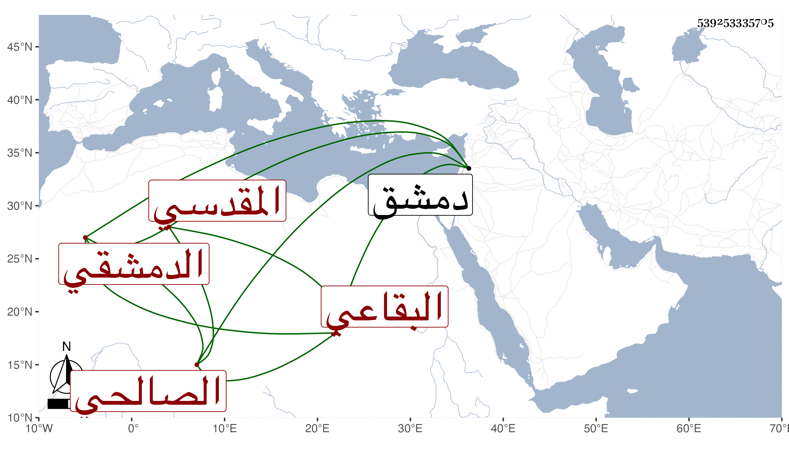

0902Sakhawi.DawLamic.ITO20230111-ara1.EIS1600.539253335705
Biography ID: 539253335705
541
محمد بن حسن بن أحمد بن عبد الهادي بن عبد الحميد بن عبد الهادي الشمس المقدسي الأصل البقاعي الدمشقي الصالحي أخو أحمد الماضي ويعرف بابن عبد الهادي . أحضر في الثانية سنة ثمانين وسبعمائة على أبيه وجده وعمه إبراهيم بن أحمد وموسى بن عبد الله المرداوي ثم سمع على عمه وغيره ومما حضره على أبيه ثاني الحربيات ، وحدث سمع منه الفضلاء كابن فهد وكان خيرا ساكنا ماهرا في التجليد من بيت حديث ورواية . مات سنة ثلاث وأربعين بدمشق . أرخه ابن اللبودي .
